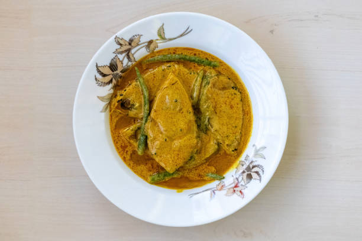

Shorshe Ilish (Hilsa in Mustard Sauce)

Ingredients
- Hilsa fish slices -- 4 to 5
- Mustard seeds -- 2 tbsp
- Green chilies -- 4 to 5
- Mustard oil -- 4 tbsp
- Turmeric powder -- ½ tsp
- Salt -- to taste
Instructions
- Soak mustard seeds and green chilies, then grind into a paste
- Marinate fish with salt and turmeric
- Heat mustard oil, add mustard paste, and cook a bit
- Add water and bring to a boil
- Add fish slices and cook until done
- Add green chilies and a little raw mustard oil before serving
Back